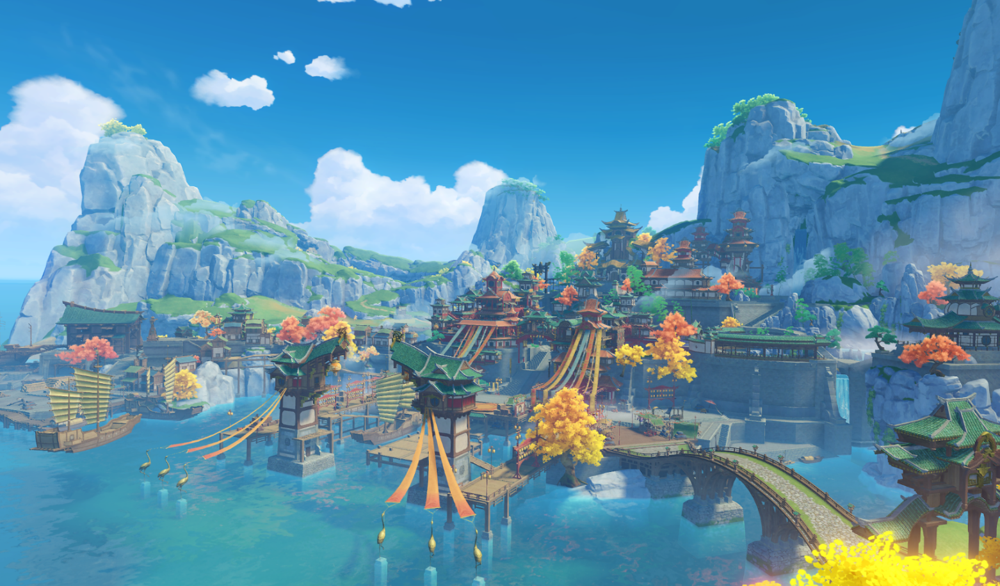
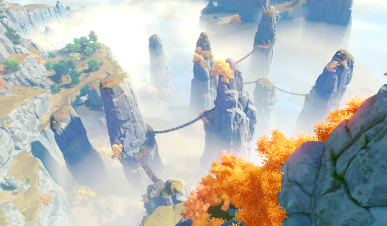
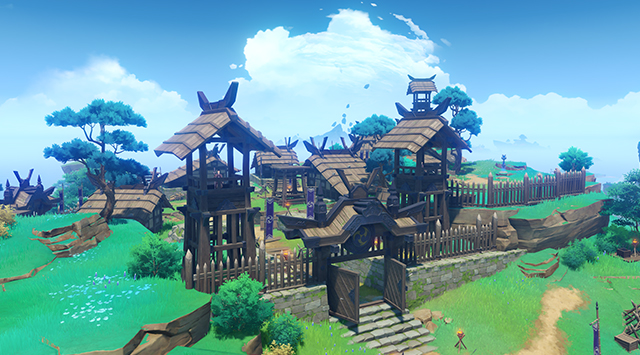
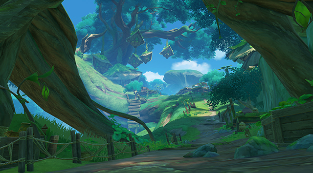

蒙德城

蒙德
位于提瓦特大陆东北部的自由城邦
群山和广袤的平原间，自由之风携着蒲公英的气息吹拂过果酒湖，为坐落于湖心岛上的蒙德城送去风神巴巴托斯的祝福与恩泽。

查看详情
蒙德
果酒湖
环绕蒙德城的天然淡水湖泊
宽广的湖面和粼粼的波光历经千年不变，水澈见底，入口清凌甘甜。正是这样的水源成就了蒙德美酒的盛名，也让果酒湖成为了蒙德的重要标志之一。

鹰翔海滩
从风起地往东延伸至海边，鹰翔海滩与誓言岬共同围成三面环海的陆地，环绕着蒙德东面的海湾。
鉴于海岸线较长且地处浅海位置，经常有蒙德市民前来游玩。偶尔可见苍鹰翱翔于碧浪白沙之上。

誓言岬
位于蒙德城东南角、风啸山坡边缘的海岬。
传说曾有一对恋人在此许下誓言，并留下一个感人至深的故事。至今此地仍被认为是恋人的好去处。
除了观看海上日出日落外，由于地势的落差，在这里也可以轻松望到海湾对面的风起地。

晨曦酒庄
位于蒙德城西南方的晨曦酒庄，代代传承着蒙德传统的酿酒工艺。
这里种植着大面积的葡萄等作物，用它们酿造出的各类酒品风靡整个提瓦特大陆。
每年晨曦酒庄产出的酒品，部分运往蒙德城内销售，另一部分则通过城南的商道销往各地。

清泉镇
蒙德地区南部的悠闲小镇，与蒙德主城隔湖相望。
此地居民多以打猎为生，常年为蒙德城内的各大餐馆提供优质鲜肉。
清泉镇以其小镇情调和乡间野趣，吸引着前来观光的游客。如果在旅途中有幸遇到某位擅长肉类料理的大厨，或许还能体验到一段别样的惊喜。

千风神殿
地处蒙德东北部的神殿遗址群。
据人们传言，千百年前这里曾是供奉古代风神的神庙，如今被漫长的时光侵蚀，只剩残存的建筑废墟。一些石质立柱上还依稀可辨认出曾经华丽雕刻的精妙曲线。
所纪念的象征早已被遗忘的石雕上雕刻着一句古老的格言，「风带来故事的种子，时间使之发芽。」

璃月港
璃月
位于提瓦特大陆东方的富饶港湾
傲然耸立的山麓石林/广袤的平原与生机勃勃的河滩共同构成了璃月的丰富地貌，在四季分明的气候下焕发多彩的风华。山石奇景间，又埋藏了多少岩之魔神的古老馈赠等待人们发掘呢？
查看详情
璃月
港口
港口的建立为璃月的海上贸易打下了最初的基础。作为提瓦特大陆上最大的集贸港口，其货物吞吐量也绝非一般港口可比拟。
每年海灯节时，在港口处可以看到海上万千宵灯飞入夜幕，是到访璃月不可错过的奇景。
天衡山
璃月港西边的山脉，也是抵御外敌的一道天然保护屏障。
有记载以来，作为璃月的壁垒经历了数不清的大小战争，因此也可以看到不少古城墙、堡垒和防御工事的遗迹。
传说中璃月人最早的采矿作业亦在此处进行。

荻花洲
荻花洲得名于浅滩中大面积生长的荻花，是璃月北部的一处天然浅滩湿地。
水泽遍布、河网交错纵横，由多样的动植物群落组成了丰富的生态系统，也构成了来往旅客眼中绝佳的景观。
同时，荻花洲也是陆路从蒙德通往璃月的必经要道，因此时常有商队在此歇脚。建在河滩深处的望舒客栈是这里的标志性建筑。

望舒客栈
荻花洲的地标，修建在一座巨大岩柱上的客栈。
来歇息的大多是途径此处的商贩，客栈也因此提供了直接贸易和摆摊的场所。高层位置视野极佳，天气晴朗时可以直接看到远处的轻策山和绝云间。
坊间有传说道，在高耸的客栈中，传承着某种神秘的使命。但传言止步于此，从未有人能证实它的真伪。

轻策庄
坐落于璃月最北部，隐藏在山丘与竹林间的村落。
白云缭绕的山谷间点缀着鳞次栉比的半月形梯田，山风吹拂时可以看见一层层多彩的波浪。
在这个宛如世外桃源的地方，轻策庄的村民过着质朴而又充实的生活。

绝云间
璃月西北部常年云雾缭绕、渺无人烟的峻岭。
山间有奇景，但由于地势复杂、山路陡峭而鲜有人迹，传闻中是守护璃月的仙人们的隐居之处。也因此受到部分求仙祈福之人的追捧。
鉴于其间的凶险不宜外人靠近，最好还是站在望舒客栈远观吧。
稻妻城
稻妻
位于提瓦特大陆远东的封闭群岛
越过无尽的雷暴，踏上红枫与绯樱眷顾的诸岛，在环绕的砂堤/高耸的断崖与幽秘的山林之中，见证御建鸣神主尊大御所大人所追寻的永恒。
查看详情
稻妻
离岛
在锁国令期间，若想真正踏上鸣神的领土，就必须先通过离岛这道关卡。
离岛由勘定奉行管辖，人们必须持有各类凭证才可出入此地，而这些凭证往往需要复杂的手续和一些特殊的关系才能办下。
如果不能顺利拿到凭证的话，就只能在离岛短暂驻足，与滞留此地的其他外人一起，略观红枫青瓦与萧条渔村的一景了。

稻妻城
稻妻最为繁华热闹的城区，稻妻人大多居住生活在此。从花见坂到町街，可顺着地势一路向上，游览当地传统的老店，品尝稻妻特色的美食。
天领奉行府也位于城中，管理民众治安与幕府军备等事务。
在稻妻城至高之处，雷电将军高居天守，凌于众生之上。

镇守之森
位于影向山下，静谧幽玄的森林。
随处可见的狸猫石像、隐于林间的错落鸟居、暗藏深处的遗落神龛…如同涓涓溪流，讲述着流淌在时光中的传说。
听说行走在镇守之森中，还能偶遇对人作怪的神秘生灵…

鸣神大社
稻妻最大的神社，位于影向山顶，供奉着御建鸣神主尊大御所大人。
心怀愿望的人，可以一步步脚踏实地地登上山顶；或者若是被雷元素垂怜，还可乘雷极一路向上，直达被巨大的神樱树所笼罩的神社。神樱常开不败，一如鸣神永恒。
穿过重重鸟居，找巫女求上一签，祈求鸣神的保佑吧。

神无冢·踏鞴砂
传说中，「神无冢」意为「神不在的山丘」，直到现在也是幕府与珊瑚宫之间的争议之地。
神无冢地势险峻，岩壁高悬。在层岩叠嶂之中，坐落着稻妻最大的冶炼设施「御影炉心」，稻妻锻刀铸剑的特殊材料玉钢即产于此地。

九条阵屋
幕府军营在神无冢的驻扎之处。
信仰雷电将军的鸣神子民，与信仰海祇大御神的珊瑚宫，双方之间存在着永远无法化解的矛盾。而这一矛盾，因眼狩令的施行更加激化。
为迎战珊瑚宫的叛军，天领奉行率幕府军驻扎于此。与珊瑚宫军相比，幕府军人员充足，军备精良，制式统一，似是胜券在握。
无想刃狭间
八酝岛的东部，被一条狭长壮阔的裂谷笔直切断。
此番壮景并非自然天成，而是雷神斩落巨蛇魔神之时造就的奇观，因雷神武艺极致「无想的一刀」命名。
直至今日，巨蛇的遗骨仍存于八酝岛各处，因魔神残骸而起的「祟神」也依旧隐隐而动…

蛇神之首
被雷神「无想的一刀」斩杀的巨蛇魔神，现今只剩下枯白的遗骨。虽然仍在向天昂起不屈的头颅，但魔神已逝，「海祇大御神」的名号也不再响亮。
魔神即使死去也会留下强大的力量。受「祟神」的影响，八酝岛人迹罕至，只有风雨和降雷还在洗刷着历史的残骸。

名椎滩
名椎滩位于八酝岛与神无冢之间，是战事密集之处。浅滩之上，除了偶然落下的堇鹮之外，遍布着残旗、断箭等战争的痕迹，与破败船帆、碎裂甲板等废弃海船的残骸。
因战乱的缘故，海贼与浪人常在此处游荡，甚至连罕见的血斛也妖冶盛开…
须弥城
须弥
位于提瓦特大陆中西部的学城之都。
同时拥有葱郁雨林与荒芜沙土的奇异国度，无数智慧的果实在这里生长/埋葬。无论是穿越丛林踏上学城的台阶，还是深入沙漠挖掘赤土的遗迹，远道而来的旅者都可以在此获取宝贵的智识。
查看详情
particulars须弥
化城郭
林上的化城。
「智慧的华城属于我们，无明的密林亦然。那宝树上缀满的，是失梦之国的余物。」
禅那园
沉思的花园。
花园中播种着无数的花卉，每一朵都要比晶蝶更加绚丽。这是善思之人所蒙许的乐园。

喀万驿
高墙下的边驿。
高大的坚壁抵御了热砂的风暴，也隔绝了知识的恩典。但神明的慧光不是本应普照所有人吗？

奥摩斯港
双树控扼的港湾。
「贤者的说教何其枯燥，不如斟满花酿的美酒，踏上征服七海的航程。」

须弥城
地上一切智慧的渊薮。
在繁枝茂叶的圣树之下，学城的贤者们已遍计所有知识。欢迎来到须弥，寻找答案的旅人。

无郁稠林
荧光闪烁的巨蕈之林。
巨蘑的伞盖构筑幽光的天幕，遮日蔽月，似是谁人培育的乐土，亦或静待生机的园圃。

水天丛林
雨无尽头的深林。
坚实的巨木拔地而起，肆无忌惮地向上生长，也许终有一天得以触碰星辰。但树冠之下，雨从未停过。
降诸魔山
见证诸魔崩毁的山脉。
庞大的机械在山野与绿苔间挤占一席之地，失去光亮后便不再言语。圆形的孔洞似是眼眸，注视历史的变迁。
枫丹廷
枫丹
位于提瓦特中部的地上之海
循着水淳淳流来的方向而行，越过原野、深林与沙海，抵达的将是大陆水系的源流之地。
在瀑布顶端、高原之上的海都深处，从未听闻的故事、早已遗忘的传说如同沉入水底的失落国度般渴求着游人。
查看详情
枫丹
枫丹廷
「众水之上，唯有此城。」
城中最高处矗立着代表枫丹至高权威的「沫芒宫」，在其俯瞰之下，人们如同「巡轨船」的航班一样井然有序地生活着。
律法服务于稳固的秩序，公平与正义则在秩序的基石之上。

海露港
瀑布的喧闹盖过了海港往来的人流之声。想要抵达瀑布顶端，即使借助升降机关也需要花上不少时间。
而当你乘上克莱门汀线，逐渐深入水的国度，一切等待都变得微不足道。

埃尔顿海沟
稍显明亮的色调令潜水员误判水域的深度，但海沟深处的船体遗骸则重新敲起警钟。
附近的水域因此有幽灵作祟的传说，但这也让它成为了追求隐秘之人最合适的藏身处。

厄里那斯
巨大的骸骨与山岳融为一体，令见者心生好奇：它为何来到此地，又为何就此停留？
是否如童话所言，巨兽的体内，还有着另一处家园？

欧庇克莱歌剧院
位于伊黎耶岛的大歌剧院，同时也是审判与裁决的象征。真实与虚幻，闹剧与悲剧在此处平等上演，或许正如古枫丹的剧作家所言，「世界不过是一幕表演，众生亦不过是舞台上的演员。」

秋分山西侧
除了广阔的水域外，枫丹也有着山地和森林，「秋分山」即是标志性的高山之一。
枫丹科学院动用大型工程用机关挖通「白淞隧道」，解决了水道建造过程中的一大难题。

塞洛海原
从神像流出的奇特力量，为旅者施加异海源水的祝福。
这份祝福令你在此通行无阻。膨膨兽的音波与水流协奏，天使海兔与你同游。

敬请期待